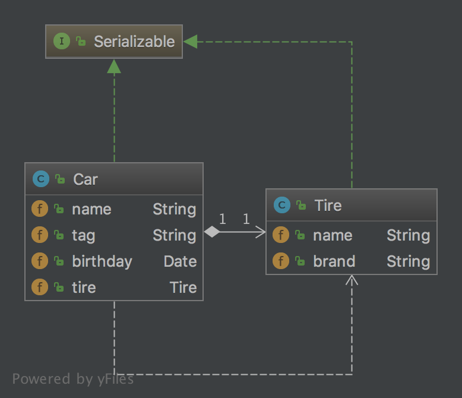

设计模式学习之原型模式
实现方式
一般情况可以通过对象克隆的方式来根据一个对象创建出来多个对象，每个对象在内存占用的内存地址都不一样。在JAVA中克隆又分为浅克隆与深克隆。
浅克隆
JAVA中是按值进行传递。实现克隆的方式就是实现Cloneable接口，这样就可以重写Object对象的clone方法来进行对象的克隆。代码如下：
/**
* Created by tomyli on 2018/5/30.
* Github: https://github.com/peng051410
*/
public class Apple implements Cloneable {
public String name;
public double weight;
@Override
protected Object clone() throws CloneNotSupportedException {
return super.clone();
}
}
测试代码如下：
public static void main(String[] args) throws Exception {
Apple apple = new Apple();
apple.name = "apple";
apple.weight = 2.23;
try {
Apple clone = (Apple)apple.clone();
System.out.println(clone == apple);
} catch (Exception e) {
e.printStackTrace();
}
}
测试代码中clone与apple是两个完全不同的对象，这样就通过apple这个原型创建出来一个全新的对象。但是这里存在一个问题，现在Apple对象中只包含了值类型的成员变量，如果包含了其它对象会克隆也会成功吗？我们在Apple对象中增加一个Stone对象的集合，代码：
public class Apple implements Cloneable {
public String name;
public double weight;
public List<Stone> list; //新增加的对象
@Override
protected Object clone() throws CloneNotSupportedException {
return super.clone();
}
}
这次再使用测试代码进行测试：
public static void main(String[] args) throws Exception {
Apple clone = (Apple)apple.clone();
System.out.println(clone == apple);
System.out.println(clone.list == apple.list);
}
apple与clone依旧不相等，但是clone.list却与apple.list是相同的，这就没有达到我们的目的。在JAVA中对对象的拷贝其实拷贝的是内存地址，所以拷贝后两个list都指定了同一个内存地址。显然，浅克隆对只包含值类型的变量拷贝是正确的，而对包含对象的拷贝的处理是不符合预期的。
深拷贝
深拷贝就是通过对JAVA对象的序列化来进行对象的完整拷贝，主要是通过ObjectInputStream与ObjectOutputStream两个流来实现对象的读取与写入。示例代码：
public class Car implements Serializable {
public String name;
public String tag;
public Date birthday;
public Tire tire;
public Car deepCopy() throws Exception {
ByteArrayOutputStream baos = new ByteArrayOutputStream();
ObjectOutputStream oos = new ObjectOutputStream(baos);
oos.writeObject(this);
ByteArrayInputStream bais = new ByteArrayInputStream(baos.toByteArray());
ObjectInputStream ois = new ObjectInputStream(bais);
Car copy = (Car) ois.readObject();
copy.birthday = new Date();
return copy;
}
}
在上面的代码中要确保每一辆车的出厂日期是唯一的，就要使用深拷贝来实现。要被克隆的对象需要实现Serializable接口。 深拷贝原型模式的类图如下: 
评论
Comments powered by Disqus